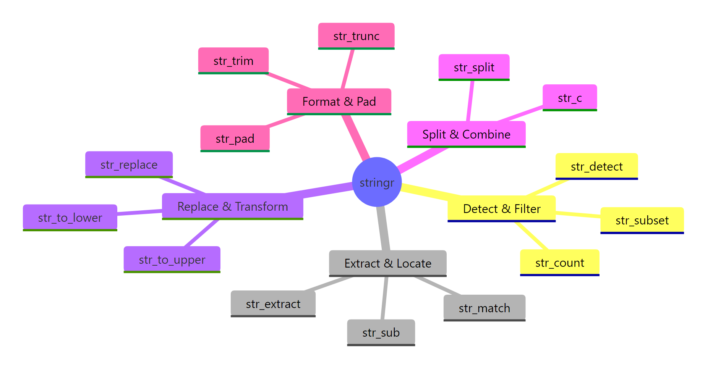
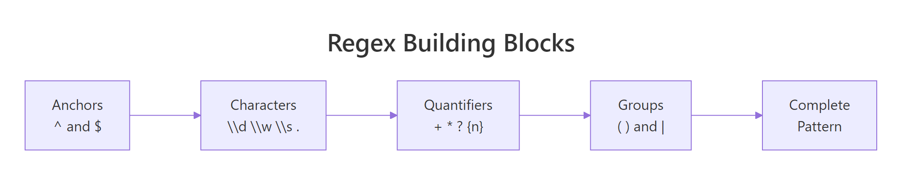
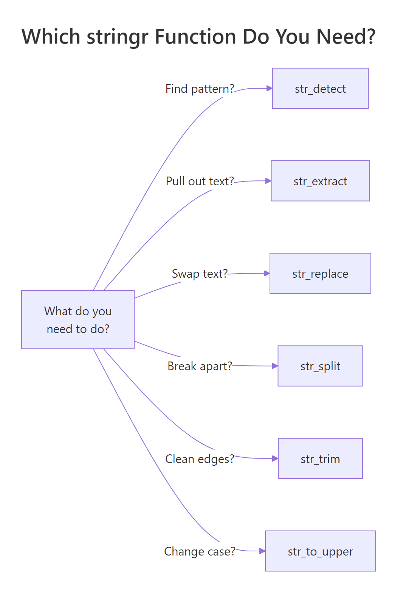

stringr in R: 15 Functions That Handle Every String Task You'll Actually Encounter
stringr is the tidyverse string toolkit. Every function starts with str_, takes the string as the first argument, and returns a vector the same length as its input. That consistency, missing from base R, is why it has become the default for cleaning, extracting, and reshaping text in R.
Why use stringr instead of base R string functions?
Base R has grepl, gsub, regmatches, substr, sub, nchar, toupper, and more. They work, but they disagree with each other about argument order, return type, and what "no match" means. stringr fixes all of this with one rule: the string comes first, the pattern comes second, and the output shape is predictable. Let's see the payoff on a messy vector of product names.
One line. str_trim strips whitespace, str_detect returns TRUE/FALSE for each element, NAs propagate cleanly. In base R you would write grepl("\\d", trimws(names)) and silently lose the NA behavior because grepl returns FALSE for NA input. That asymmetry is exactly the kind of bug stringr prevents.

Figure 1: The seven families of stringr functions. Pick a family based on what you want to do, detect, extract, replace, split, measure, modify, or format.
stringr organizes its ~40 functions into seven families. You rarely need more than 15 of them in daily work, and this post covers every one of those 15.
library(tidyverse) loads it automatically. If you only need strings, library(stringr) is lighter.Try it: Use str_detect() on the vector below to return TRUE for elements that contain "fox".
Click to reveal solution
str_detect() returns one logical value per input element, TRUE where the pattern "fox" appears anywhere in the string and FALSE otherwise. The two fox entries match, while "brown bear" and "deer" do not.
How do you test if a string contains something with str_detect()?
str_detect(string, pattern) returns a logical vector, TRUE where the pattern matches, FALSE where it does not. It is the workhorse of every filter step that touches text.
Two details worth memorizing. First, \\. matches a literal dot, because . in regex means "any character". Escaping a dot is the single most common stringr bug. Second, $ anchors to the end of the string, so @gmail.com.backup would not match.
Three cousins of str_detect come up often:
Use str_detect when you will feed the result to filter() or if_else(). Use str_which when you need integer positions (rare). Use str_count when "how many" is the actual question.
fixed() to turn off regex interpretation and in coll() for locale-aware matching.Try it: Filter the tibble to rows where the title column contains the word "report", case-insensitive.
Click to reveal solution
Wrapping the pattern in regex(..., ignore_case = TRUE) tells stringr to match "report" regardless of capitalization, so both "Sales Report Q1" and "REPORT-draft" pass the filter. The plain strings "invoice 2024" and "memo" are dropped because they don't contain the word at all.
How do str_extract() and str_match() pull out parts of a string?
When you need the matched text itself, not just TRUE/FALSE, use str_extract for a simple capture and str_match when you need named groups.
str_extract returns one match per string (the first). str_extract_all returns a list, one vector per string, possibly of different lengths. The list shape is annoying but honest: you cannot fit variable-length results into a plain vector.
For structured extraction, use capture groups with str_match:
Column 1 is the full match; columns 2+ are the capture groups in order. You can wrap this in a tibble and rename the columns for a quick parser. For the pipe-friendly version, tidyr::extract() does the same thing straight into a data frame.

Figure 2: Anatomy of a regex pattern. Every stringr function uses these same pieces.
str_match returns a character matrix, not a list or tibble. If your strings have no match, that row is all NAs, check with anyNA() before assuming success.Try it: Extract the phone number (10 digits, possibly with dashes) from each string below.
Click to reveal solution
The pattern \\d{3}-?\\d{3}-?\\d{4} asks for three digits, an optional dash, three more digits, an optional dash, then four digits, so it matches both the dashed and undashed forms. The third string has no run of 10 digits, so str_extract() returns NA for it.
How does str_replace() change text inside strings?
str_replace(string, pattern, replacement) swaps the first match; str_replace_all swaps every match. The replacement string can reference capture groups with \\1, \\2, etc.
The character class [$,] matches either a dollar sign or a comma. One str_replace_all call handles both. The pipe into as.numeric gives you a numeric column ready for arithmetic.
Capture groups make format-switching trivial:
\\1, \\2, \\3 correspond to the three parenthesized groups in the pattern. This is vastly simpler than a nested substr() + paste0() dance.
For non-regex replacement, when your pattern contains special characters you do not want interpreted, wrap the pattern in fixed():
Without fixed(), the dots would match any character and you might accidentally replace "1X2Y3". Use fixed() whenever the pattern is a known literal.
str_remove() and str_remove_all(), sugar for str_replace(..., ""). Both are clearer at the call site when you just want to delete text.Try it: Normalize these filenames to lowercase kebab-case (lowercase, dashes not spaces).
Click to reveal solution
str_replace_all(" ", "-") swaps every space for a dash, and str_to_lower() then lowercases the full string including the file extension. Chaining the two in the pipe keeps the transformation readable and avoids an intermediate variable.
How do you split and join strings with str_split() and str_c()?
str_split cuts one string into pieces on a pattern; str_c is the opposite, glueing several vectors into one. Both are used constantly in data cleaning.
simplify = TRUE promotes the list result to a character matrix when every input has the same number of parts. When that is not guaranteed, leave it as the default list and purrr::map_chr through it. str_split_fixed(x, pattern, n) is another option, it pads short rows with empty strings so you always get n columns.
Going the other way:
sep concatenates element-wise; collapse concatenates the whole vector into a single string. The two arguments compose, you can use both in one call when combining vectors and then flattening.
str_c treats NA like NA, any element with an NA becomes NA. Use paste or coalesce(x, "") if you want NAs to be silently treated as empty strings.Try it: Split each string on the colon, then build a named vector from the result.
Click to reveal solution
simplify = TRUE turns the split list into a 3x2 character matrix, keys in column 1, values in column 2. setNames() then attaches the key column as names on the value column, producing a named character vector ready for lookup.
How do you clean whitespace, case, and padding?
Most real string cleanup involves four things: trimming whitespace, changing case, padding to a fixed width, and fixing length. stringr has one-liners for each.
Pair str_squish with str_to_title as a one-stop cleanup for names. str_squish is stronger than str_trim because it also collapses any internal runs of whitespace to a single space, critical when copy-pasting from spreadsheets.
Padding is the opposite problem: making short strings match a target width, typically for alignment.
Zero-padded IDs are a classic need, think invoice numbers, customer codes, file names sorted lexically. side = "right" and side = "both" are also valid.
str_length answers "how many characters in this string?". It counts by code points, not bytes, so it is safe for non-ASCII text.

Figure 3: A cheat sheet for picking the right stringr function based on the question you are trying to answer.
str_to_title uses locale rules, so "o'brien" becomes "O'Brien" in English but may behave differently in Turkish locale due to the dotted/dotless I. For strict ASCII, use str_to_upper(substring(x, 1, 1)) + str_to_lower(substring(x, 2)).Try it: Clean the vector below so every element is title-case, single-spaced, and trimmed.
Click to reveal solution
str_squish() trims leading and trailing whitespace and collapses any internal runs of spaces down to a single space, which handles the double and quintuple gaps in the input. str_to_title() then capitalizes the first letter of each word, giving you a clean, uniform vector.
How do you use regex with stringr effectively?
Every stringr function takes a pattern, and by default that pattern is regex. A short tour of the five regex features you will actually use:
Five regex tools, five concepts. Most data-cleaning regex you will ever write is just a combination of these with careful escaping. Resist the temptation to build a 200-character super-regex, split it into two or three simpler steps that are easier to debug.
When regex feels like overkill, wrap the pattern in fixed() for literal matching or coll() for locale-aware matching. When the pattern needs options like case-insensitive or dotall, use regex(..., ignore_case = TRUE).
"\\d" in code, \d in the compiled regex. Forgetting the double backslash is the second-most-common stringr bug (after unescaped dots).Try it: Use a regex to extract the hashtags from the tweet below into a character vector.
Click to reveal solution
str_extract_all() returns a list (one element per input string), so [[1]] unwraps the single tweet's matches into a plain character vector. The pattern #\\w+ matches a # followed by one or more word characters (letters, digits, underscore), which is exactly the shape of a hashtag.
Practice Exercises
Exercise 1: Parse a messy log
Given this log vector, extract a tibble with columns timestamp, level, user_id, and message.
Solution
Exercise 2: Normalize phone numbers
Take the messy vector and normalize each to the format +1-AAA-BBB-CCCC. Drop numbers that do not have exactly 10 digits.
Solution
Exercise 3: Find and count hashtags
Given a vector of tweets, return a tibble with columns hashtag and count, sorted descending.
Solution
Complete Example
Here is a full cleaning pipeline on a customer table with messy names, emails, and phone numbers.
Seven stringr calls, one clean pipeline, tidy output ready for the next step in your workflow. The lookahead regex (?<=@).+$ extracts everything after the @ without including the @ itself, a clean way to get the domain.
Summary
| Task | Function | Returns |
|---|---|---|
| Test match | str_detect() |
logical |
| Count matches | str_count() |
integer |
| Find positions | str_which() |
integer |
| Extract first match | str_extract() |
character |
| Extract all matches | str_extract_all() |
list |
| Extract with groups | str_match() |
matrix |
| Replace first | str_replace() |
character |
| Replace all | str_replace_all() |
character |
| Split | str_split() |
list |
| Join | str_c() |
character |
| Trim whitespace | str_trim() / str_squish() |
character |
| Change case | str_to_lower/upper/title() |
character |
| Pad | str_pad() |
character |
| Length | str_length() |
integer |
| Subset by position | str_sub() |
character |
Four rules worth internalizing:
- Escape dots.
\\.matches a literal dot;.matches any character. - Pattern interpretation. Plain strings are regex;
fixed()is literal;regex()adds options. - Single vs all. Most functions have a
_allvariant, pick the one that matches your question. - List vs vector.
_allextractors return lists because match counts vary; handle that shape explicitly.
References
- stringr official reference
- stringr regex vignette
- R for Data Science, 2e, Strings chapter
- ICU regex syntax
- regex101.com, interactive regex testing; set flavor to "PCRE2" for a close match to stringr.
Continue Learning
- dplyr filter() and select(), pair
str_detect()withfilter()for text-based row filters. - pivot_longer() and pivot_wider(), often needed before or after string cleanup.
- dplyr mutate() and rename(), every string transformation lives inside a mutate.